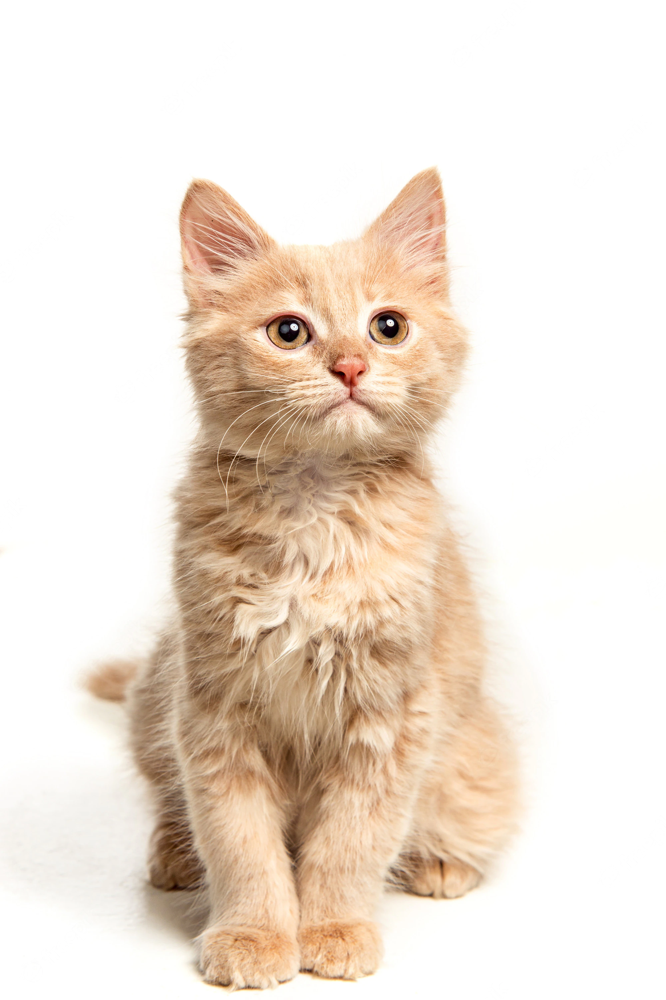

 Ginger
Convivir con un gato supone enormes beneficios para ti, pero debes ofrecer esos mismos beneficios a tu compañero felino. Para ello es importante informarse y buscar asesoramiento sobre los cuidados básicos, las necesidades etológicas y nutricionales de los gatos antes de decidir adoptar uno. De esta forma, tanto tu gato como tu estarán sanos y felices, y podrán disfrutar de una convivencia de calidad, basada en el respeto y el cariño.